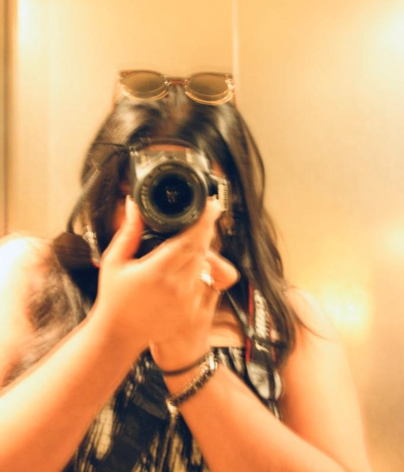

About Me
As a hobby photographer, my name is Netharsana Jeyakumar and I have been combining my passion for photography with my hobby since 2014. Over the years, I have dedicated myself to capturing beautiful and meaningful moments through my lens. I take great pride in my work and constantly strive to improve my skills.
In 2021, I started my own business venture, which I named Sri Vision. The idea behind Sri Vision was to create an Instagram account that would showcase my photography and share my passion with others. I have always been fascinated by the power of images to convey emotion and tell stories, and I wanted to create a platform where I could share my vision with the world.
Through Sri Vision, I aim to inspire others with my photography, whether it's by capturing stunning landscapes or telling compelling stories through portraits. I believe that social media platforms like Instagram offer an incredible opportunity to connect with people from all over the world and to share our passions and interests.